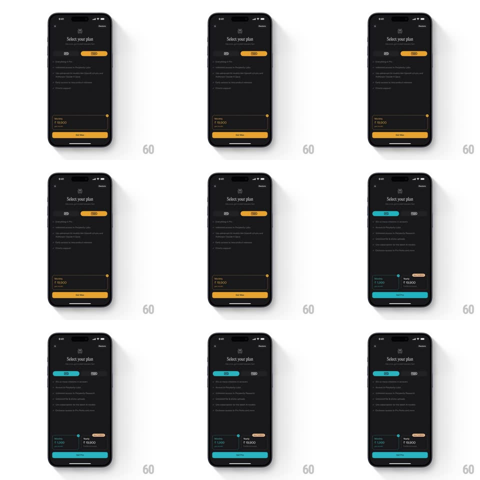

Media
Frame-by-frame

Rebuild this interaction 1:1: Perplexity's plan switcher - toggling between Pro and Max morphs the screen's accent color, slides the pricing cards, and restaggers the feature list with springy physics.

Rebuild this interaction 1:1: Perplexity's plan switcher - toggling between Pro and Max morphs the screen's accent color, slides the pricing cards, and restaggers the feature list with springy physics.
## Integration
Integration: stack-agnostic spec - springs given as stiffness/damping, timed motions as duration + curve; map every value to your framework and animation library of choice.
## Scene
A dark "Select your plan" paywall: a Pro | Max segmented pill, a bulleted feature list, two pricing cards (Monthly ₹1,999 / Yearly ₹19,900), and a full-width CTA ("Get Pro" / "Get Max").
## Motion spec
Pattern: accent-color morph + content slide on tab change, ~600ms.
- Pill: the selected segment's knob slides across (spring ~420/24, 300ms) with the label colors swapping.
- Accent: every accent on the screen (pill, card highlights, CTA) tweens between teal (Pro) and amber-gold (Max) over 300ms - one continuous color morph, not a swap.
- Cards: the pricing cards slide horizontally as a pair (translateX with the tab direction, spring ~340/24, 350ms), the selected plan's card scaling 0.98 -> 1 as it lands.
- Features: the list rows fade/rise restaggered (150ms each, 50ms apart) as the new plan's content replaces the old.
- CTA: its label crossfades ("Get Pro" <-> "Get Max", 150ms) while its fill morphs with the accent.
## Calibration
- Everything derives from one accent value - no element should lag the color morph.
- Direction matters: switching to Max slides content left, to Pro slides right.
## Reduced motion
Instant content swap with a 200ms fade; color change is immediate.
## Don't miss
- The yearly card keeps its discount badge through the slide.
- The CTA color and the pill accent always match.